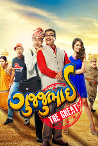
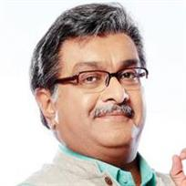
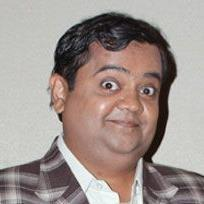

BOOK NOW
GUJJUBHAI-THE GREAT (U) ( Comedy ) 92 ♥
Theatrical Trailer
Synopsis
Hasmukh Gandhi has a simple philosophy: enjoy and let enjoy. But his stress-free life is interrupted when his daughter, Tanisha comes home with her boyfriend, Montu. While everyone in the Gandhi family has fallen for Montu's charm, Hasmukh sees him for the trickster he is. Not wanting his daughter to be entrapped, Hasmukh has found the perfect boy for her; one who is not only trustworthy, but also someone he knows will take care of her. The trouble is no one approves of his choice.
Bakul Buch, Hasmukh's hardworking manager has always had a soft spot for Tanisha but has never been brave enoght to talk to any woman, let alone Tanisha. Hasmukh takes it upon himself to transform Bakul from the simpleton that he is, to a cool 'gujju'.
Hasmukh puts in place a series of events that soon start to go terribly out of his control, with some totally unexpected consequences; Bakul has no choice but to play along, and Montu is onto them at every turn. And if their cat and mouse game was not crazy enough, the police suspect Hasmukh and Bakul to be wanted terrorists and follow their every move. What begins then is the most bizarre gujju love story ever told, with lies, spies, underworld dons, and a curious case of a gold bracelet. Will Bakul manage to win over Tanisha?
Find out as our gujjubhai encounters one hilarious situation after another in ''Gujjubhai the Great''
Gujjubhai - The Great is the first Gujarati urban super-comedy film. It is based on the superhit franchise of the Gujjubhai stage plays.
Director: Ishaan Randeria
Writer: Siddharth Randeria
Musician: Parth Bharat Thakkar, Advait Nemlekar
Lead Cast:
Siddharth Randeria

Jimit Trivedi
Swati Shah
Dipna Patel
Alekh Sangal
Sunil Vishrani
